Te invito a descubrirlo en Tres Valles, un municipio del estado de Veracruz donde el trabajo y la dedicación de su gente dan forma a su economía. Aquí, todo comienza en el campo. Al recorrer sus caminos, verás los extensos cañales que se mueven con el viento, reflejando el esfuerzo de quienes trabajan la tierra día con día. No es solo cultivo, es una tradición que se ha transmitido por generaciones y que sigue siendo el corazón del municipio. Pero la historia no termina ahí. La caña continúa su camino hacia el ingenio azucarero, donde se transforma gracias al trabajo de muchas personas que hacen posible este proceso. Además, la presencia de industrias como la papelera muestra cómo Tres Valles ha crecido, combinando lo tradicional con lo moderno. Conocer sus principales fuentes económicas no es solo aprender sobre números o producción… es entender el valor del esfuerzo, la importancia del trabajo en comunidad y la manera en que cada actividad aporta al desarrollo del lugar.
En el municipio de Tres Valles, los cañales representan uno de los elementos más característicos del paisaje y una base fundamental de la economía local. Estas extensas áreas dedicadas al cultivo de caña de azúcar no solo definen la imagen del municipio, sino que también reflejan el esfuerzo y la tradición agrícola de su gente. Los cañales se extienden a lo largo de la región, aprovechando las condiciones climáticas favorables de Veracruz, lo que permite una producción constante y de gran importancia para el sector agroindustrial. Este cultivo es el principal sustento de muchas familias, quienes participan en distintas etapas del proceso, desde la siembra hasta la cosecha. Durante la temporada de zafra, los campos adquieren un dinamismo especial. Es común observar la actividad constante de los trabajadores, el traslado de la caña y el movimiento que genera esta labor, lo cual evidencia la relevancia de esta actividad en la vida diaria del municipio. Además de su valor económico, los cañales forman parte de la identidad cultural de Tres Valles. Representan la conexión entre la comunidad y la tierra, así como el legado de generaciones que han trabajado en el campo, transmitiendo conocimientos y tradiciones.
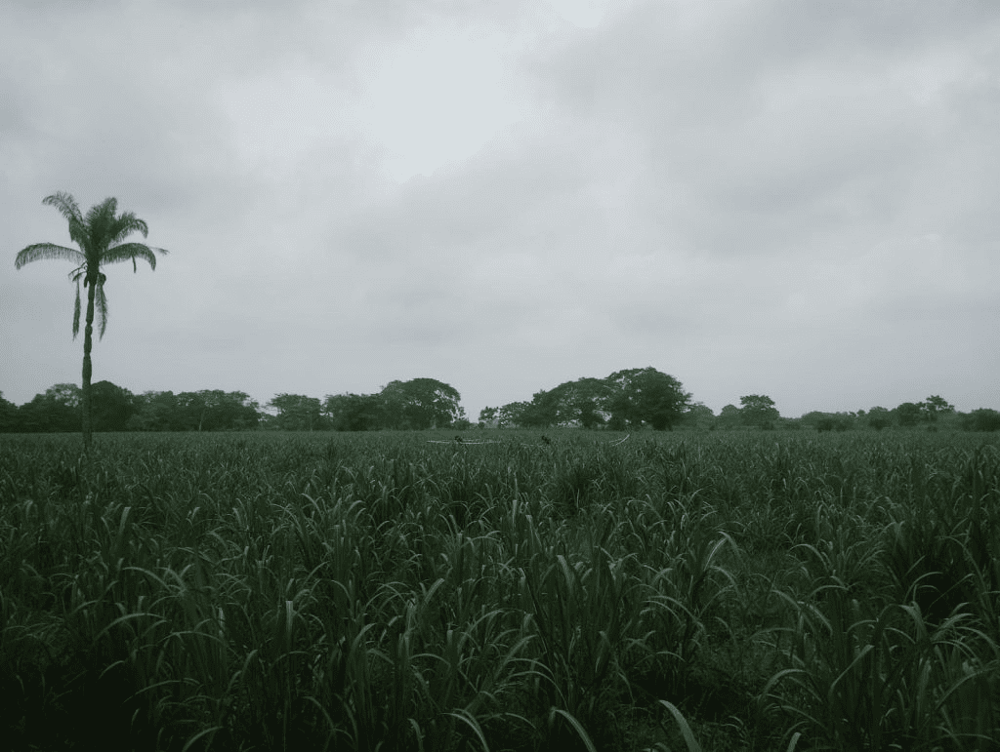
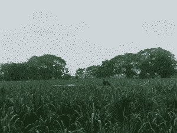
En el municipio de Tres Valles, el Ingenio Azucarero Tres Valles representa uno de los pilares fundamentales de la economía local y un símbolo del desarrollo productivo de la región. Esta industria ha desempeñado un papel clave en el crecimiento del municipio, al generar empleo y fortalecer la actividad agrícola, especialmente en el cultivo de caña de azúcar. El ingenio se encarga del procesamiento de la caña para la producción de azúcar, integrando el trabajo del campo con la industria. Este proceso involucra a un gran número de productores, trabajadores y familias que dependen directa e indirectamente de esta actividad, lo que resalta su importancia dentro de la vida económica y social de Tres Valles. Además de su función industrial, el ingenio azucarero forma parte de la identidad del municipio. Durante la temporada de zafra, la actividad aumenta considerablemente, generando un ambiente dinámico que refleja el esfuerzo colectivo y la tradición agrícola de la región.
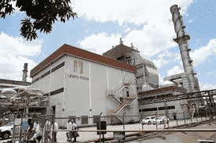
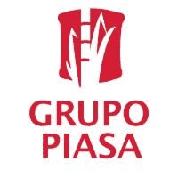
En el municipio de Tres Valles, la Papelera de Tres Valles se posiciona como una de las industrias más relevantes de la región, desempeñando un papel importante en el desarrollo económico y productivo del municipio. Esta empresa se dedica a la transformación de materias primas en productos de papel, contribuyendo significativamente a la actividad industrial local. La papelera no solo genera empleos directos e indirectos, sino que también impulsa el crecimiento de otros sectores, como el transporte, el comercio y los servicios. Su presencia ha favorecido la diversificación económica de Tres Valles, complementando la tradicional actividad agrícola con procesos industriales que fortalecen la economía regional. Además, esta industria forma parte del entorno cotidiano del municipio, siendo reconocida por los habitantes como un símbolo del trabajo y el progreso. A lo largo del tiempo, ha contribuido a mejorar las condiciones de vida de muchas familias, consolidándose como una fuente estable de ingresos y oportunidades.
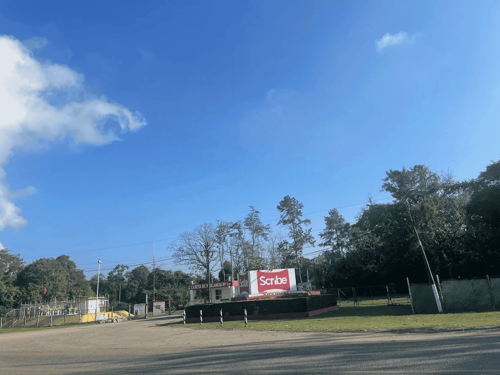
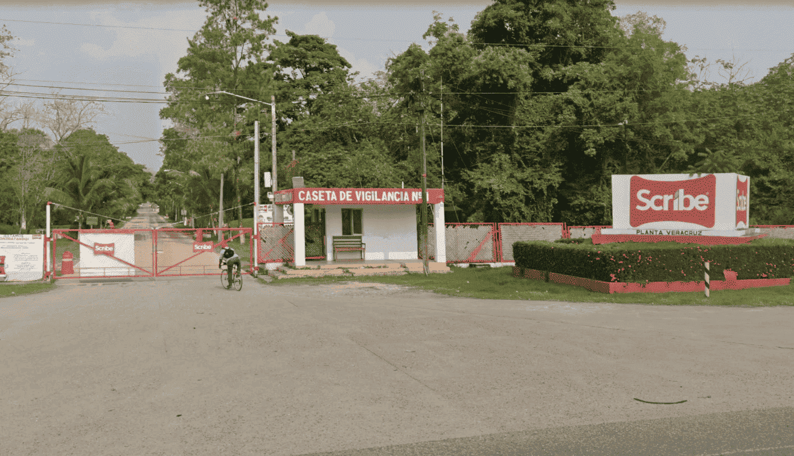
La sucursal de Bueno, Bonito y Barato (3B) en Tres Valles es una opción práctica para quienes buscan productos de uso diario a precios accesibles. Este establecimiento ofrece una amplia variedad de artículos para el hogar, despensa, limpieza e higiene personal, convirtiéndose en un punto de compra frecuente para habitantes y visitantes. Gracias a su surtido y economía, la tienda contribuye al comercio local y facilita el acceso a productos de calidad a bajo costo. Su ubicación y servicio la convierten en una alternativa conveniente para realizar compras rápidas durante una visita a la ciudad
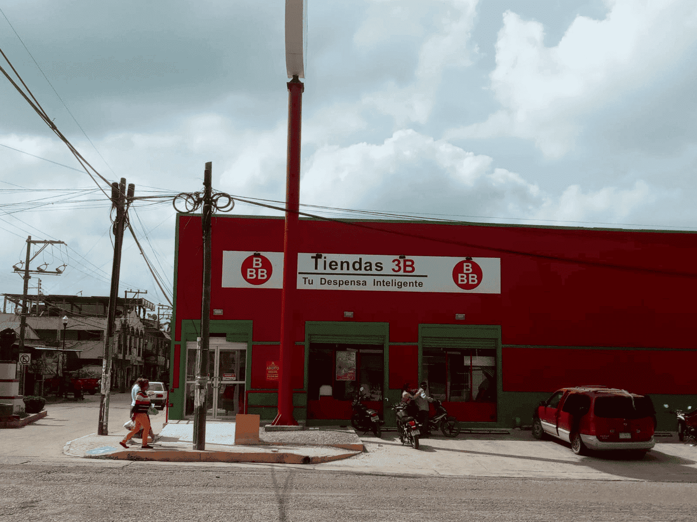
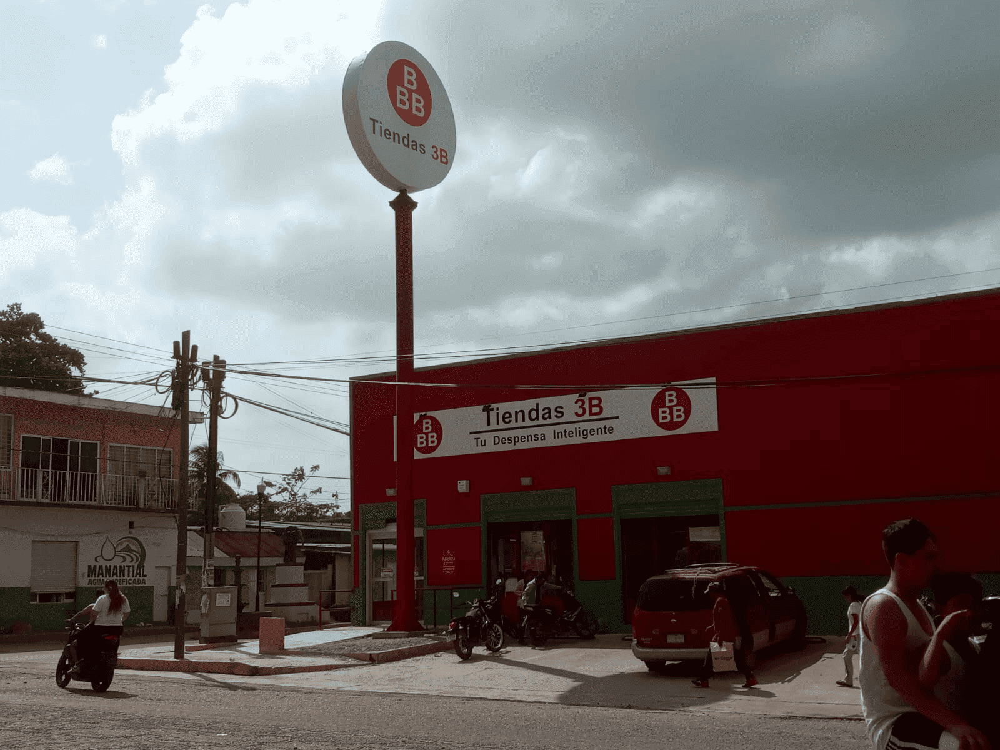
Coppel es una de las tiendas departamentales más reconocidas de Tres Valles, ofreciendo una amplia variedad de productos que incluyen ropa, calzado, muebles, electrónicos, motocicletas y artículos para el hogar. Gracias a sus opciones de crédito y facilidades de pago, se ha convertido en un establecimiento importante para la comunidad. Su presencia contribuye a la actividad comercial del municipio y brinda a los visitantes una alternativa cómoda para realizar compras durante su estancia en la ciudad. Además, su ubicación céntrica facilita el acceso a clientes y turistas que recorren la zona urbana de Tres Valles.
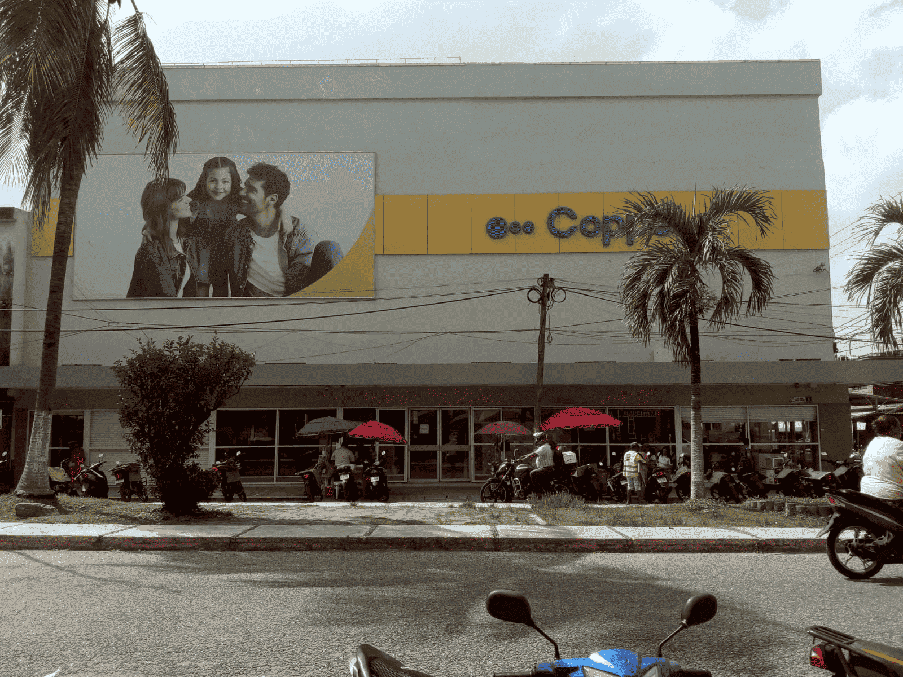
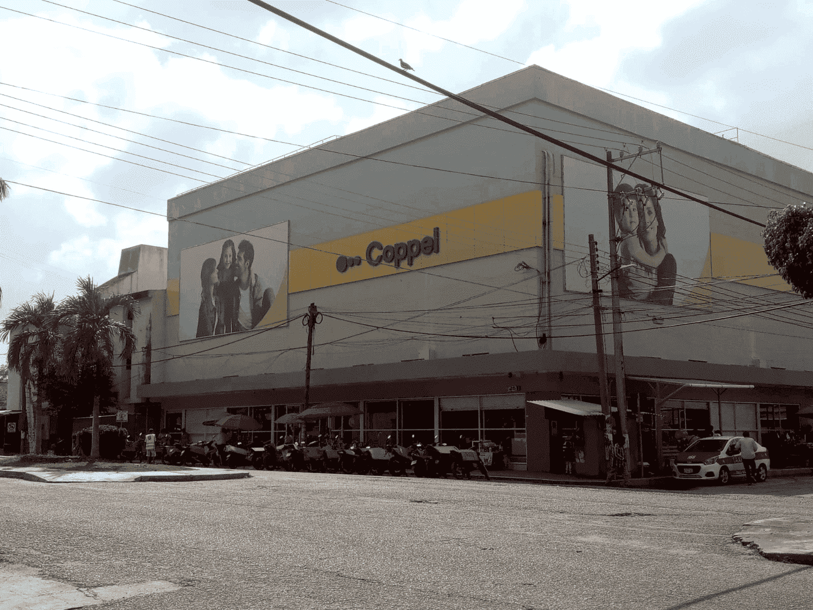
Bodega Aurrera es uno de los principales centros comerciales de Tres Valles, Veracruz, reconocido por ofrecer una gran variedad de productos a precios accesibles. En sus instalaciones los visitantes pueden encontrar alimentos, artículos de limpieza, productos para el hogar, ropa y otros bienes de consumo diario. Gracias a su amplio surtido y comodidad, se ha convertido en un punto importante para las compras de familias y visitantes. Su presencia fortalece la actividad económica local y brinda una opción práctica para quienes desean abastecerse durante su estancia en el municipio.
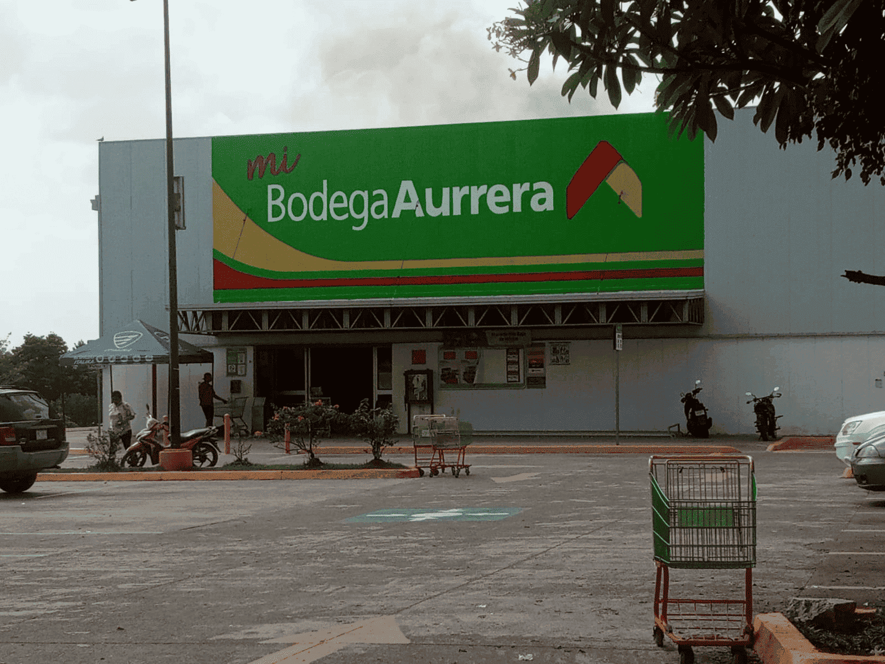
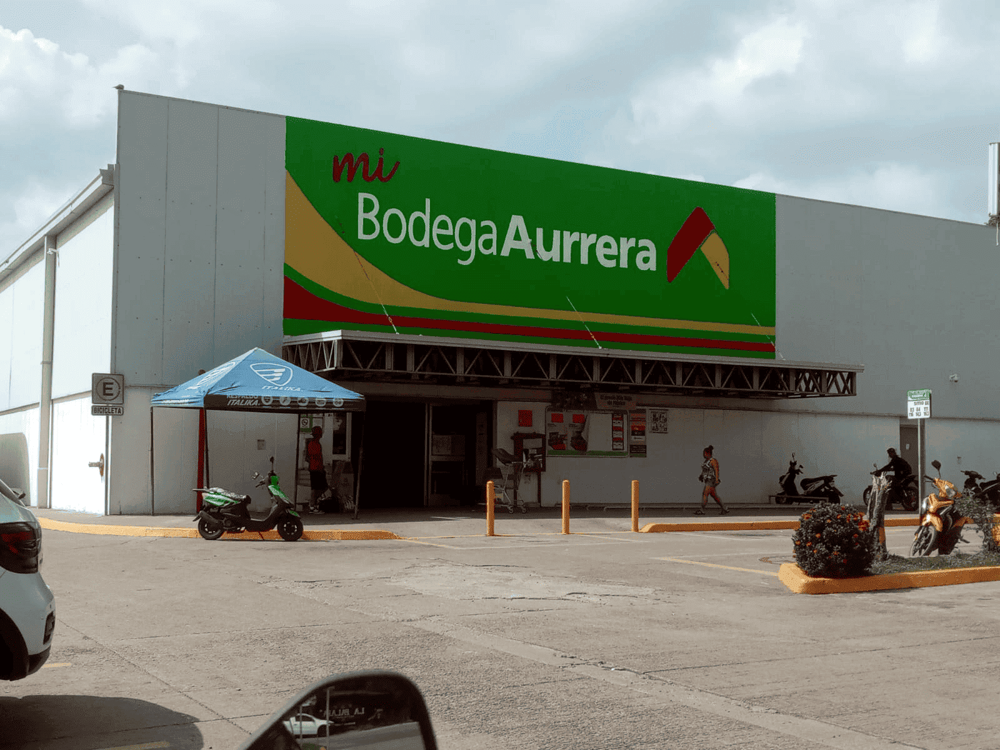
Bodega Aurrera es uno de los principales centros comerciales de Tres Valles, Veracruz, reconocido por ofrecer una gran variedad de productos a precios accesibles. En sus instalaciones los visitantes pueden encontrar alimentos, artículos de limpieza, productos para el hogar, ropa y otros bienes de consumo diario. Gracias a su amplio surtido y comodidad, se ha convertido en un punto importante para las compras de familias y visitantes. Su presencia fortalece la actividad económica local y brinda una opción práctica para quienes desean abastecerse durante su estancia en el municipio.
Parafraceado por IA